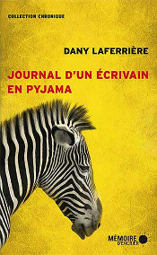
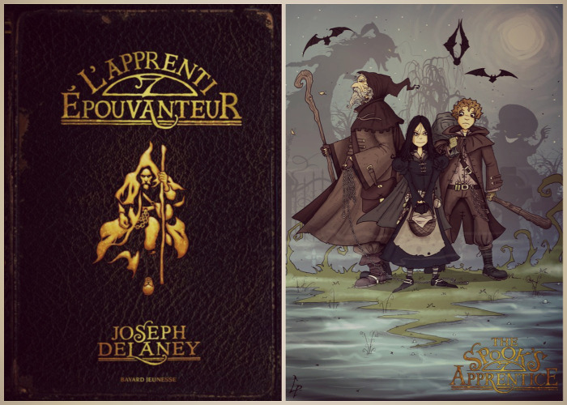

Mes lectures récentes
Écrire ne laisse pas beaucoup de place à la lecture. Ou plutôt devrais-je dire que lorsque j’attaque un projet d’écriture, j’y passe tout mon temps et n’arrive plus à lire.
Je suis actuellement en train d’écrire pour un concours, mais je vais quand-même vous parler des livres dans lesquels j’essaye de m’évader un peu de temps en temps. Il m’arrive très rarement de lire plusieurs ouvrages en même temps. Tout simplement parce que la plupart du temps, quand je commence un livre, je m’y plonge en oubliant de vivre normalement jusqu’à ce que je l’ai terminé. Pourtant en ce moment, allez savoir pourquoi, je navigue entre deux bords. Mais remontons le temps un peu plus loin…
Ne lisez pas trop en profondeur ce que je vais écrire si vous avez l’intention, vous aussi, de découvrir les œuvres citées ci-dessous.
Le fabuleux Maurice et ses rongeurs savants de Terry Pratchett
Avant de me lancer dans l’écriture d’un nouveau roman, j’avais décidé de lire la collection complète des Annales du Disque-Monde de Terry Pratchett. Comme je vous l’ai déjà dit dans un autre article sur ce merveilleux auteur, j’ai déjà achevé quelques unes des superbes histoires de notre ami Rincevent, ou encore de la Mort. Cette fois, c’est le vieux Maurice qui m’a entrainée dans ses aventures.
Maurice est un chat errant d’Ankh-Morpork, tout ce qu’il y a de plus normal. Oui, sauf qu’il est capable de parler. Il parle et il pense, tout comme une colonie de rats qui s’est nourrie dans les poubelles de l’Université Invisible, l’école des mages.
Maurice est devenu si malin qu’il a eu l’idée de s’allier avec les rats pour arnaquer les humains. Selon lui, il leur faut de l’argent pour mener une vie digne de ce nom. Les rats ne voient pas trop pourquoi ils auraient besoin de l’argent des humains, mais ils font confiance au matou et l’aident à réaliser ses plans. Il se trouve que Maurice a trouvé un jeune joueur de flûte qui gagnait sa vie dans la rue. Il le prend sous son aile, car comme c’est bien connu sur le Disque-Monde, les joueurs de flûte savent hypnotiser les rats pour leur faire quitter les villes. Je vous laisse deviner le plan de Maurice ! Les humains payent le gamin pour qu’ils jouent et les rats savent ce qu’ils ont à faire pour que le plan fonctionne ! Tout le monde finit par récupérer sa part. Oui, mais voilà, tout ne peut pas toujours se passer comme prévu.
J’ai trouvé ce roman extraordinairement drôle. Les personnages sont tous très attachants et l’intrigue générale vraiment bien menée. Je ne pouvais pas deviner ce qui allait se produire avant de le lire. Terry Pratchett a fait énormément de recherches sur les rats pour mener à bien son projet, et après cette lecture, vous ne verrez plus les rongeurs de la même façon ! Je le recommande vraiment, car contrairement à ce qui est annoncé à son sujet, Le fabuleux Maurice et ses rongeurs savants n’est pas une histoire destinée aux enfants. Ils peuvent la lire, bien sûr, mais ils ne prendront certainement pas conscience d’autant de choses qu’un adulte.
Journal d’un écrivain en pyjama de Dany Laferrière
J’ai commencé à lire ce roman, qui se veut aussi guide de bons conseils pour les écrivains, lorsque j’ai décidé de me plonger dans le concours d’écriture pour lequel j’écris en ce moment. Ce livre me semblait idéal, car il promettait de nombreux conseils pour écrire convenablement et je n’avais encore jamais mis les pieds dans les fictions réalistes.
Effectivement, le narrateur nous prodigue de nombreux conseils qui, selon lui, lui auraient été utiles aussi à ses débuts ou qu’il aurait aimés recevoir à ce moment-là. Par exemple, élaguer son texte à la relecture en enlevant un adverbe sur deux ou en supprimant des adjectifs superflus.
Au fil de ma lecture, j’ai commencé à me demander si ces astuces étaient vraiment fournies par l’auteur du roman, qui en était aussi le narrateur, ou si tout ce qui était écrit n’était en fait qu’une fiction, une mise en abyme : est-ce que Dany Laferrière, écrivain, avait décidé que son narrateur serait lui-même écrivain.
J’ai été assez perturbée par ces interrogations et je ne savais plus si je devais prendre les conseils écrits au sérieux. De toute manière, je n’avais pas l’intention de les appliquer un à un, je souhaitais seulement appréhender les expériences d’un autre écrivain. Mais je me suis sentis perdue et j’ai laissé tomber le livre. Je le terminerai probablement plus tard. J’ai fini par avoir une idée pour mon roman et j’ai mis de côté la lecture.
L’apprenti épouvanteur de Joseph Delaney
Ce roman est le premier de la saga L’épouvanteur. J’ai eu envie de le lire après avoir vu le film Le septième fils. Cette adaptation cinématographique m’a beaucoup plu. J’ai aimé les personnages, notamment Maître Gregory qui était bien drôle, et certaines scènes comme celle avec le gobelin qui était très impressionnante. Si vous n’avez pas vu ce film de fantasy, je vous le conseille vivement.
Après avoir commencé le premier tome de la saga, je m’aperçois que le film ne respecte pas du tout le livre. Rien que pour l’âge de l’apprenti il y a une différence significative. Je vois donc les deux œuvres comme indépendantes. Ça ne me dérange pas. Au contraire, j’ai l’impression de ne pas connaître le déroulement de l’histoire et de tout découvrir comme si je n’avais jamais vu de film dessus auparavant. Je viens seulement de le commencer, mais j’aime déjà beaucoup le style de l’auteur, même si les temps employés dans certains passages me semblent maladroits et gênent un peu ma lecture.
Je ne peux rien vous dire sur ce roman, si ce n’est que le début est très intéressant et m’a directement emprisonnée pour m’inciter à en lire la suite. Je suis seulement plus longue que d’habitude à achever le roman, car je suis préoccupée par mon propre récit.
Et vous, vous avez lu ces romans ? Qu’en dîtes-vous ? Avez-vous des lectures à me conseiller ?